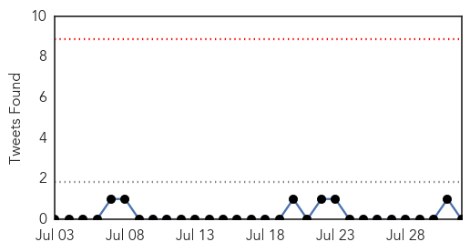
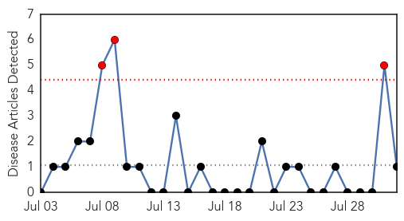
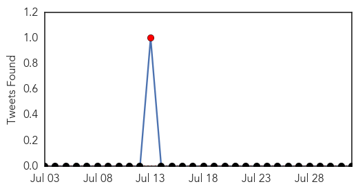
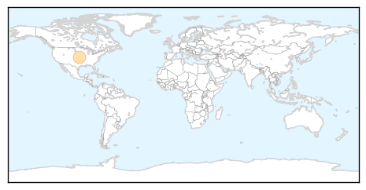

Unknown
30-Day Web Trend
0 alerts, 0 warnings

30-Day Twitter Trend
0 alerts, 0 warnings

Article Locations

Article Confidences
Top Articles:
- 0.998
- (LEAD) S. Korea's MERS cases, fatalities remain flat
- 0.989
- Bronx Residents Anxious After 4th Death From Legionnaires’ Disease
- 0.989
- 4th Person Dies In South Bronx Outbreak « CBS New York
- 0.988
- Toll from Bronx outbreak of Legionnaires' Disease climbs
- 0.983
- 4th Death in "Unusual" Legionnaires' Outbreak in NYC: Health Officials
- 0.979
- Outbreak Of Legionnaires' Disease Has Infected 31 People, k!lled 2 In NYC
- 0.972
- Texas, Wisconsin and Georgia Restaurants Link in 26 State Cyclospora Outbreak
- 0.952
- Hong Kong ends travel warning against South Korea after country deemed Mers-free
- 0.947
- Salmonella outbreak that may be tied to pork grows
- 0.941
- CDC Coming to Washington to Help in 90 Person Salmonella Outbreak
- 0.917
- Chicago Tribune
- 0.917
- Chicago Tribune
- 0.896
- Americas declared rubella, measles free
- 0.890
- Salmonella outbreak linked to pork expands to 90 cases
- 0.888
- Salmonella outbreak linked to pork increases to 90 cases
- 0.851
- No isolation wards: Congo virus poses threat to K-P
- 0.783
- E. coli found in Los Altos water indicated breach, but only low risk
- 0.781
- Legionella Discovered. No Concern
- 0.763
- Bulgaria veterinary authorities continue work to tackle brucellosis outbreak (ROUNDUP)
- 0.746
- BP Calls for Inspections After Third Legionnaires' Death in The Bronx
- 0.725
- East African news, Headlines, Business, Tourism, Sports, Health, Entertainment, Education
- 0.722
- CDC Update: 384 Cyclospora Cases in 26 States Linked to Cilantro
- 0.707
- Texas A&M entities helping understand, monitor Chagas disease
- 0.705
- Kenya : State warns over foot and mouth disease
- 0.690
- Dont worry , be horny!
- 0.683
- State to hold hearings on HPV vaccinations
- 0.677
- Clashes break out in West Bank after toddler’s death
- 0.677
- Paris makes rent cap regulations a reality
- 0.677
- Palestinian teen killed in West Bank clashes with Israeli army
- 0.677
- Plane debris arrives in France for MH370 link investigation
- 0.677
- Barzani asks PKK to quit Iraqi Kurdish enclave
- 0.677
- Bin Laden relatives killed in private jet crash in England
- 0.677
- Taliban’s new leader Mullah Mansour calls for unity
- 0.668
- Another gastro death in city finally wakes up MC
- 0.658
- Arsenic mitigation units to protect 26,000 people
- 0.634
- Grace Runs to Singapore while Zimbabwean Women are Raped by Prophets
- 0.591
- WHO and sailing body seek virus tests in Rio Olympic venues
- 0.585
- Drivers on rural roads face many hazards
- 0.565
- Hospital infection program already producing results; 6 Northeast Ohio hospitals penalized
- 0.544
- Death toll due to heavy rains in Gujarat reaches 40
- 0.541
- Swaziland shows signs of turning corner on world's highest HIV rates
- 0.540
- A Killer on the Loose
- 0.538
- Cold and flu lasting longer than usual this year
- 0.508
- USDA girds for possible bird flu return this fall
- 0.501
- Polio vaccination kicks off in 32 high risk counties
- 0.501
- 53 million adults in the US live with a disability
Top Tweets:
- 0.726
- Voy con otro yo a una entrevista de trabajo, yo digo haya y él, haiga... a ver si de verdad no existe diferencia en la vida real.
Chikungunya
30-Day Web Trend
3 alerts, 0 warnings

30-Day Twitter Trend
1 alerts, 0 warnings

Article Locations
Article Confidences

Top Articles:
Top Tweets:
-
No tweets found for Aug 01, 2015